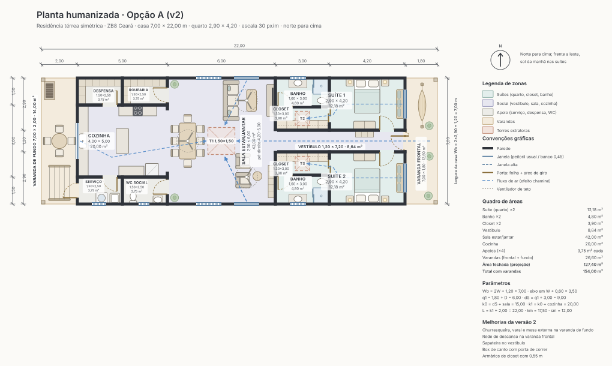
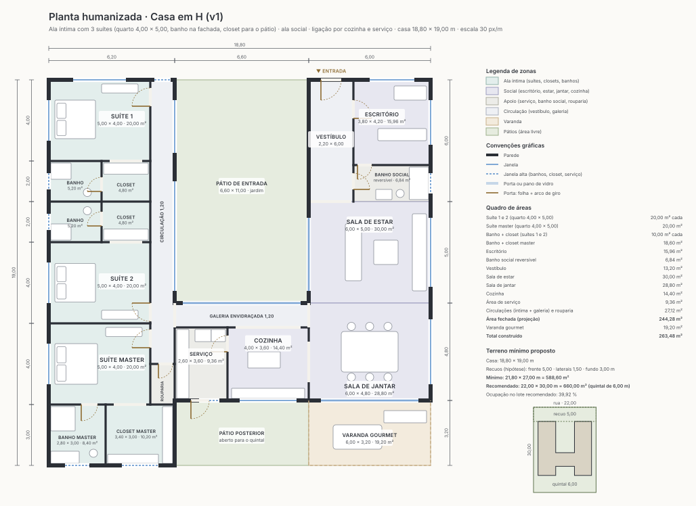

Modulus
Projetos de casas desenhados em escala, com quadro de áreas, terreno mínimo e estratégias de conforto, e um gerador que propõe plantas a partir do terreno e do programa de necessidades.
Gerador
Gerar uma planta
Terreno, formato (bloco único, L, U, H), quartos, salas, garagem, sobrado, subsolo, edícula e piscina.
Abrir o gerador →
Banco de projetos
Ver projetos prontos
Estudos publicados e as plantas que você salvou no gerador, com filtros e exportação.
Abrir o banco →
Estudos em destaque
Um exemplo de cada formato com 3 suítes e 3 vagas, gerado agora pelo Modulus com as regras atuais (corredor que termina no quarto, cozinha integrada, sol e vento), e os estudos desenhados à mão. Ver todos no banco →

Estudo desenhado à mão
Residência simétrica do nascente
Casa térrea espelhada, em quatro opções, com duas suítes voltadas para o sol da manhã, sala alta e torres extratoras.
- Casa
- 7,00 × 22,65 a 11,20 × 21,80 m
- Área fechada
- 133,35 a 201,60 m²
- Lote
- a partir de 10 × 30 m

Estudo desenhado à mão
Casa em H
Ala íntima com três suítes, ala social com escritório e banho reversível, e ligação pela cozinha e pela área de serviço.
- Casa
- 18,80 × 19,00 m
- Área fechada
- 244,28 m²
- Lote
- mínimo de 21,80 × 27,00 m